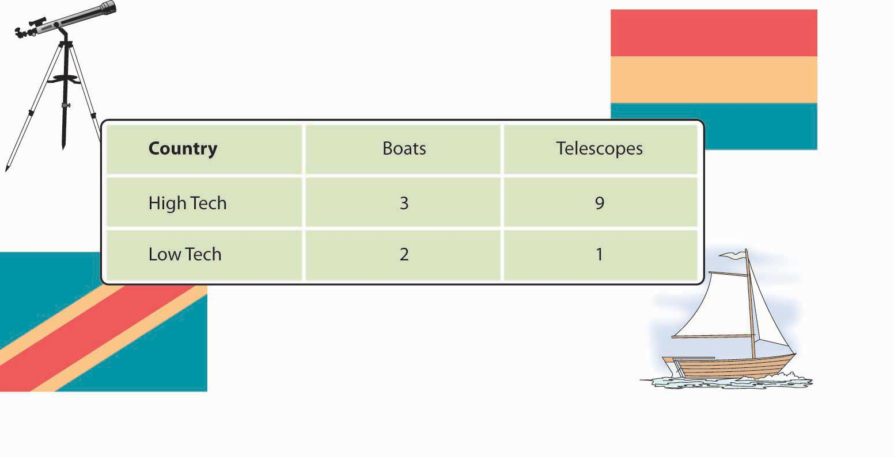
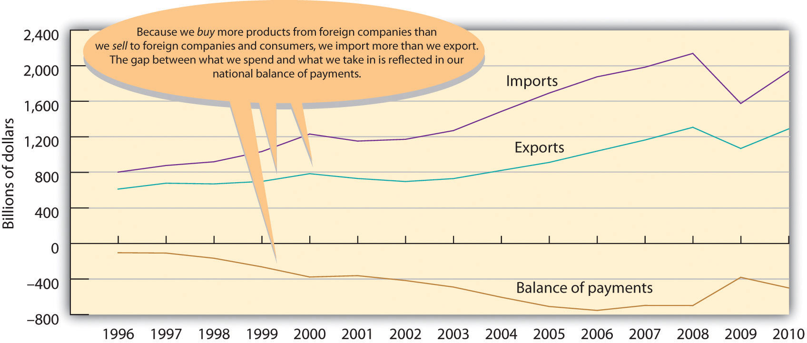

The globalization of business is bound to affect you. Not only will you buy products manufactured overseas, but it’s highly likely that you’ll meet and work with individuals from various countries and cultures as customers, suppliers, colleagues, employees, or employers. The bottom line is that the globalization of world commerce has an impact on all of us. Therefore, it makes sense to learn more about how globalization works.
Never before has business spanned the globe the way it does today. But why is international business important? Why do companies and nations engage in international trade? What strategies do they employ in the global marketplace? What challenges do companies face when they do business overseas? How do governments and international agencies promote and regulate international trade? Is the globalization of business a good thing? What career opportunities are there for you in global business? How should you prepare yourself to take advantage of them? These are the questions that we’ll be addressing in this chapter. Let’s start by looking at the more specific reasons why companies and nations engage in international trade.
Why does the United States import automobiles, steel, digital phones, and apparel from other countries? Why don’t we just make them ourselves? Why do other countries buy wheat, chemicals, machinery, and consulting services from us? Because no national economy produces all the goods and services that its people need. Countries are importers when they buy goods and services from other countries; when they sell products to other nations, they’re exporters. (We’ll discuss importing and exporting in greater detail later in the chapter.) The monetary value of international trade is enormous. In 2010, the total value of worldwide trade in merchandise and commercial services was $18.5 trillion.World Trade Organization, press release, “Trade growth to ease in 2011 but despite 2010 record surge, crisis hangover persists,” Appendix Table 1 (World merchandise trade by region and selected economies, 2010) and Appendix Table 2 (World exports of commercial services by region and selected country, 2010), April 7, 2011, http://www.wto.org/english/news_e/pres11_e/pr628_e.htm, (accessed August 20, 2011).
To understand why certain countries import or export certain products, you need to realize that every country (or region) can’t produce the same products. The cost of labor, the availability of natural resources, and the level of know-how vary greatly around the world. Most economists use the concepts of absolute advantage and comparative advantage to explain why countries import some products and export others.
A nation has an absolute advantageCondition whereby a country is the only source of a product or is able to make more of a product using the same or fewer resources than other countries. if (1) it’s the only source of a particular product or (2) it can make more of a product using the same amount of or fewer resources than other countries. Because of climate and soil conditions, for example, France had an absolute advantage in wine making until its dominance of worldwide wine production was challenged by the growing wine industries in Italy, Spain, and the United States. Unless an absolute advantage is based on some limited natural resource, it seldom lasts. That’s why there are few, if any, examples of absolute advantage in the world today.
How can we predict, for any given country, which products will be made and sold at home, which will be imported, and which will be exported? This question can be answered by looking at the concept of comparative advantageCondition whereby one nation is able to produce a product at a lower opportunity cost compared to another nation., which exists when a country can produce a product at a lower opportunity cost compared to another nation. But what’s an opportunity cost? Opportunity costs are the products that a country must decline to make in order to produce something else. When a country decides to specialize in a particular product, it must sacrifice the production of another product.
Let’s simplify things by imagining a world with only two countries—the Republic of High Tech and the Kingdom of Low Tech. We’ll pretend that each country knows how to make two and only two products: wooden boats and telescopes. Each country spends half its resources (labor and capital) on each good. Figure 3.2 "Comparative Advantage in the Techs" shows the daily output for both countries: High Tech makes three boats and nine telescopes while Low Tech makes two boats and one telescope. (They’re not highly productive, as we’ve imagined two very small countries.)
Figure 3.2 Comparative Advantage in the Techs
First, note that High Tech has an absolute advantage (relative to Low Tech) in both boats and telescopes: it can make more boats (three versus two) and more telescopes (nine versus one) than Low Tech can with the same resources. So, why doesn’t High Tech make all the boats and all the telescopes needed for both countries? Because it lacks sufficient resources to make all the boats and all the telescopes, High Tech must, therefore, decide how much of its resources to devote to each of the two goods. Let’s assume that each country could devote 100 percent of its resources on either of the two goods. We’ll pick boats as a start. If both countries spend all their resources on boats (and make no telescopes), here’s what happens:
Now to telescopes. Here’s what happens if each country spends all its time making telescopes and makes no boats:
Each country will specialize in making the good for which it has a comparative advantage—that is, the good that it can make most efficiently, relative to the other country. High Tech will devote its resources to telescopes (which it’s good at making), and Low Tech will put its resources into boat making (which it does well). High Tech will export its excess telescopes to Low Tech, which will pay for the telescopes with the money it earns by selling its excess boats to High Tech. Both countries will be better off.
Things are a lot more complex in the real world, but, generally speaking, nations trade to exploit their advantages. They benefit from specialization, focusing on what they do best, and trading the output to other countries for what they do best. The United States, for instance, is increasingly an exporter of knowledge-based products, such as software, movies, music, and professional services (management consulting, financial services, and so forth). America’s colleges and universities, therefore, are a source of comparative advantage, and students from all over the world come to the United States for the world’s best higher-education system.
France and Italy are centers for fashion and luxury goods and are leading exporters of wine, perfume, and designer clothing. Japan’s engineering expertise has given it an edge in such fields as automobiles and consumer electronics. And with large numbers of highly skilled graduates in technology, India has become the world’s leader in low-cost, computer-software engineering.
To evaluate the nature and consequences of its international trade, a nation looks at two key indicators. We determine a country’s balance of tradeDifference between the value of a nation’s imports and its exports during a specified period. by subtracting the value of its imports from the value of its exports. If a country sells more products than it buys, it has a favorable balance, called a trade surplusCondition whereby a country sells more products than it buys, resulting in a favorable trade balance.. If it buys more than it sells, it has an unfavorable balance, or a trade deficitCondition whereby a country buys more products than it sells, resulting in an unfavorable trade balance..
For many years, the United States has had a trade deficit: we buy far more goods from the rest of the world than we sell overseas. This fact shouldn’t be surprising. With high income levels, we not only consume a sizable portion of our own domestically produced goods but enthusiastically buy imported goods. Other countries, such as China and Taiwan, which manufacture primarily for export, have large trade surpluses because they sell far more goods overseas than they buy.
Are trade deficits a bad thing? Not necessarily. They can be positive if a country’s economy is strong enough both to keep growing and to generate the jobs and incomes that permit its citizens to buy the best the world has to offer. That was certainly the case in the United States in the 1990s. Some experts, however, are alarmed at our rapidly accelerating trade deficit. Investment guru Warren Buffet, for example, cautions that no country can continuously sustain large and burgeoning trade deficits. Why not? Because creditor nations will eventually stop taking IOUs from debtor nations, and when that happens, the national spending spree will have to cease. “Our national credit card,” he warns, “allows us to charge truly breathtaking amounts. But that card’s credit line is not limitless.”Warren E. Buffet, “Why I’m Not Buying the U.S. Dollar,” Wall Street Week with Fortune, http://www.pbs.org/wsw/news/fortunearticle_20031026_03.html (accessed May 25, 2006).
By the same token, trade surpluses aren’t necessarily good for a nation’s consumers. Japan’s export-fueled economy produced high economic growth in the 1970s and 1980s. But most domestically made consumer goods were priced at artificially high levels inside Japan itself—so high, in fact, that many Japanese traveled overseas to buy the electronics and other high-quality goods on which Japanese trade was dependent. CD players and televisions were significantly cheaper in Honolulu or Los Angeles than in Tokyo. How did this situation come about? Though Japan manufactures a variety of goods, many of them are made for export. To secure shares in international markets, Japan prices its exported goods competitively. Inside Japan, because competition is limited, producers can put artificially high prices on Japanese-made goods. Due to a number of factors (high demand for a limited supply of imported goods, high shipping and distribution costs, and other costs incurred by importers in a nation that tends to protect its own industries), imported goods are also expensive.“Why Are Prices in Japan So Damn High?” The Japan FAQ, http://www.geocities.com/japanfaq/FAQ-Prices.html (accessed May 25, 2006).
The second key measure of the effectiveness of international trade is balance of paymentsDifference between the total flow of money coming into a country and the total flow of money going out.: the difference, over a period of time, between the total flow of money coming into a country and the total flow of money going out. As in its balance of trade, the biggest factor in a country’s balance of payments is the money that comes in and goes out as a result of imports and exports. But balance of payments includes other cash inflows and outflows, such as cash received from or paid for foreign investment, loans, tourism, military expenditures, and foreign aid. For example, if a U.S. company buys some real estate in a foreign country, that investment counts in the U.S. balance of payments, but not in its balance of trade, which measures only import and export transactions. In the long run, having an unfavorable balance of payments can negatively affect the stability of a country’s currency. Some observers are worried about the U.S. dollar, which has undergone an accelerating pattern of unfavorable balances of payments since the 1970s. For one thing, carrying negative balances has forced the United States to cover its debt by borrowing from other countries.Warren E. Buffet, “Why I’m Not Buying the U.S. Dollar,” Wall Street Week with Fortune, http://www.pbs.org/wsw/news/fortunearticle_20031026_03.html (accessed May 25, 2006); “U.S. Trade in Goods and Services—Balance of Payments (BOP) Basis, 1960 thru 2010,” June 9, 2011, http://www.census.gov/foreign-trade/statistics/historical/gands.txt (accessed August 21, 2011). Figure 3.4 "U.S. Imports, Exports, and Balance of Payments, 1994–2010" provides a brief historical overview to illustrate the relationship between the United States’ balance of trade and its balance of payments.
Figure 3.4 U.S. Imports, Exports, and Balance of Payments, 1994–2010
Note: Figures are for “goods” only, not “goods and services.”
Source: U.S. Census Bureau, Foreign Trade Division.
Nations trade because they don’t produce all the products that their inhabitants need.
To explain how countries decide what products to import and export, economists use the concepts of absolute and comparative advantage.
We determine a country’s balance of trade by subtracting the value of its imports from the value of its exports.
The balance of payments is the difference, over a period of time, between the total flow coming into a country and the total flow going out.
(AACSB) Analysis
We use the concepts of absolute and comparative advantage to explain why countries import some products and export others. We can also use them to explain how work can be divided between two persons. Two consultants—Jennifer and John—have a client who needs a company report written and a PowerPoint presentation prepared within the next two weeks. Both Jennifer and John have experience writing reports and preparing presentations, but neither has the time to do both jobs. From past experience, they know how much time each of them needs to complete each type of project:
| Consultant | Write a report | Prepare a presentation |
|---|---|---|
| John | 80 hours | 40 hours |
| Jennifer | 150 hours | 60 hours |
Using the information contained in the grid above, answer each of the following questions:
(AACSB) Analysis
What happens if, during a given year, you spend more money than you take in? What happens if you finance your overspending by running up your credit-card balance to some outrageous limit? Would you have trouble borrowing in the future? Would you have to pay higher interest rates? How would you get out of debt?
Now let’s change you to the United States. The United States has just run up one of the largest one-year trade deficits in history—for 2010 the trade deficit was almost $500 billion. Respond to the following items: